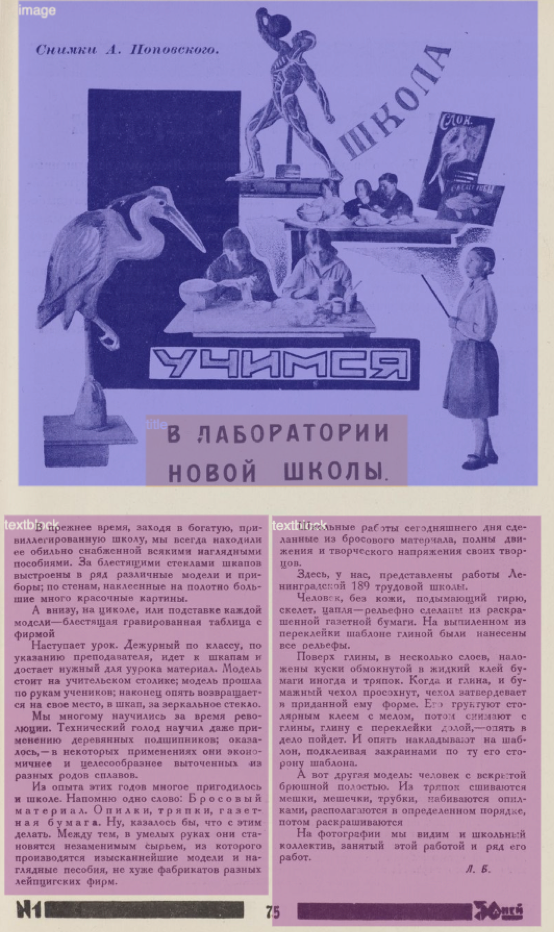

PI: Katherine Hill Reischl, Slavic Languages and Literatures
This ever-growing project seeks to transform the complexities of early Soviet journals’ graphic environments into useable data. The current iteration of the project’s corpus includes twenty-six distinct titles containing over a hundred thousand articles, poems, editorial commentaries, advertisements, theater listings as well as images representing a variety of genres and media. Through the abstraction of journal elements as data, we seek to produce representations that will make not only the journals’ contents but also big picture structures available to distant reading and analysis for researchers.
We ask: What can we ask of periodicals that we might not of other digitized media? What can machine learning tell us about these journals that might be overlooked in ordinary or habitual reading practices? What patterns can we discover across a collection? What types of images or subjects appear and disappear in the history of publication? Are there unexpected points of continuity or difference between a diverse set of journals published at the start of the twentieth century?
This Stanford-based extension of the project, begun at Princeton University and in collaboration with ITMO University in St. Petersburg, focuses particularly on the diverse images featured in the journals’ pages. Having begun with the articulation of rudimentary image typologies and applied computer learning to the image corpus (identifying illustrations, photographs, caricature, advertisements as well as subjects), we are currently looking for new ways to extract data related to color values and quantity across the journal runs.
Image top: Training the model in document segmentation to predict constituent parts of a journal page, from 30 dnei
Image bottom: Example of a color mask for an image in the journal 30 dnei
